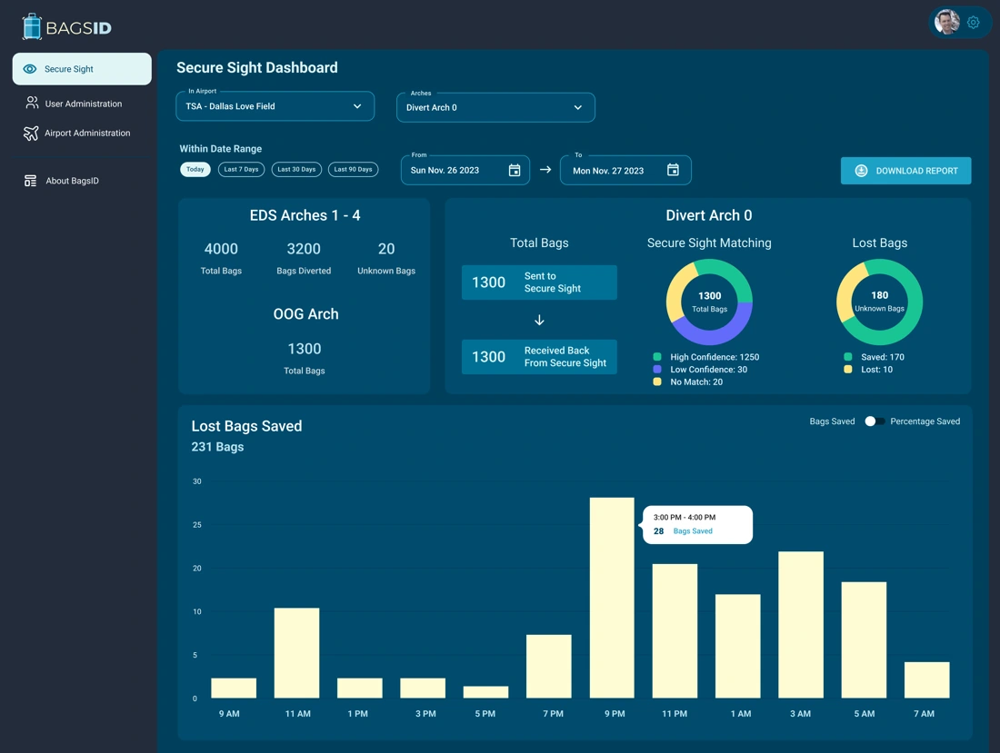
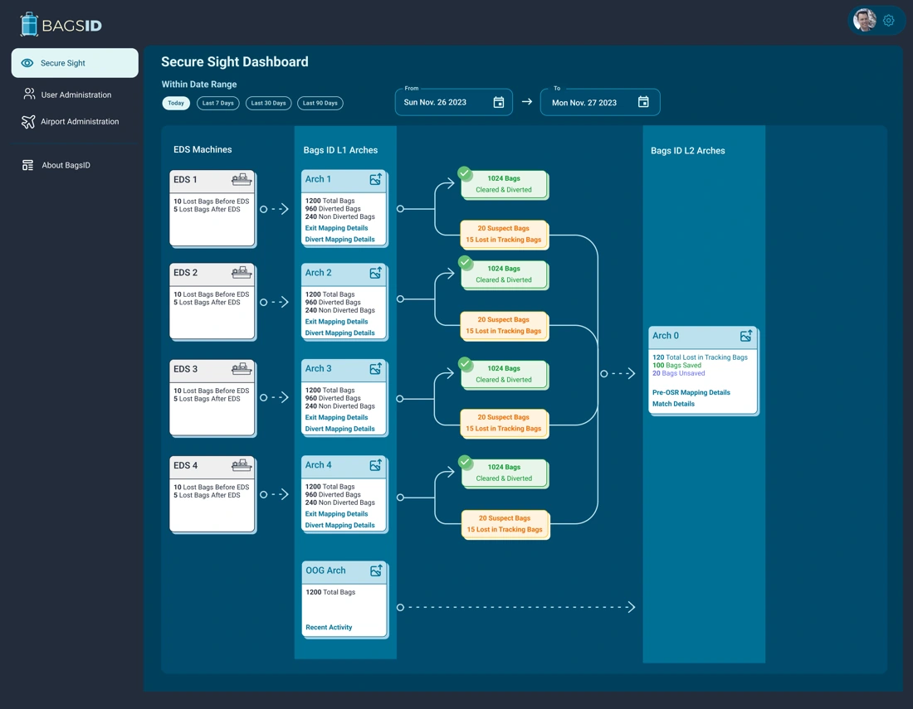
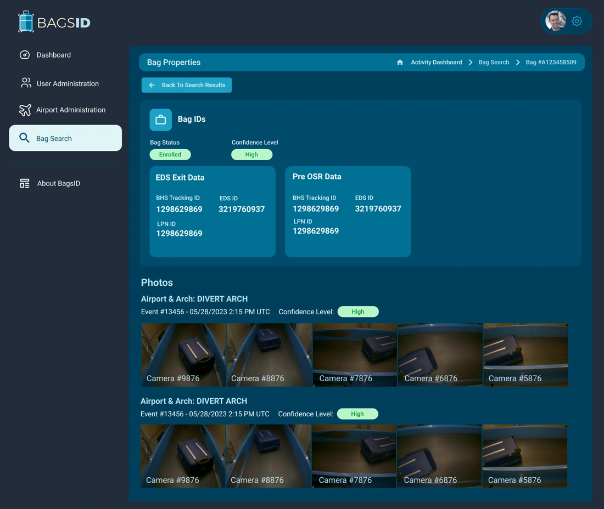
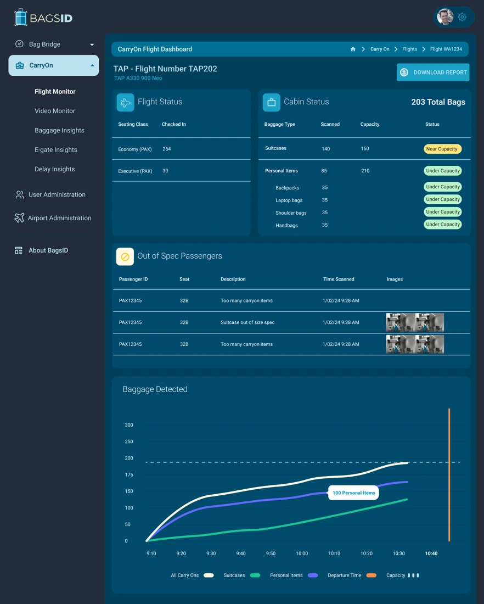
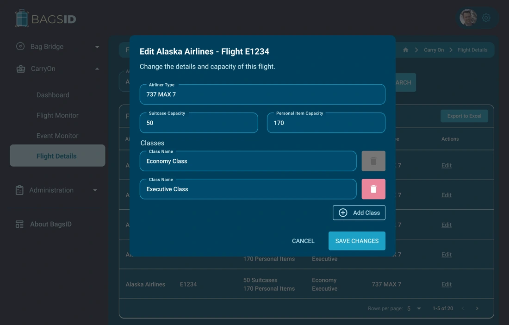
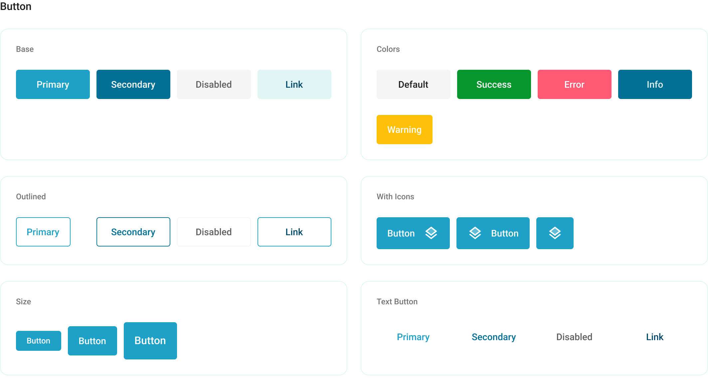

Product & design systems
BagsID
Turned a new brand into a shared design system and working baggage-identification interfaces.
Outcomes & evidence
- One design foundation across identity, React components, and operational interfaces
- Brand → product
Research with prospective users, airlines, airports, and TSA informed interfaces demonstrated in real working conditions. Branded, white-label, and API options support different customer integration needs.
As VP of UX, I lead product delivery and contribute directly. I created the brand, initial interfaces, and design system, and designed and built the current website.
THE WORK, IN PRACTICE
The identity, components, website, films, and product screens below show how that approach carries through into delivery.
THE CURRENT WEBSITE
The identity, in use.
I designed and built the BagsID website around the identity I created.

Translated the corporate identity into a website introducing the platform, BagBridge, and CarryOn.

Extended the brand into the baggage-scanning environment and helped shape the arch branding.
I designed and built the current BagsID website, bringing the CVI into a complete digital experience. The site introduces the platform and its BagBridge and CarryOn products for airport and airline audiences.
Visit BagsID ↗I created the BagsID identity and carried it across product and marketing.

Established the logo, color, typography, imagery, and layout language used across touchpoints.
CORPORATE VISUAL IDENTITY
One identity. Every touchpoint.
I produced campaign and marketing materials from the shared corporate identity.

Connected physical baggage with digital identity through the brand’s marketing imagery.

Applied a coordinated visual language across campaign and social materials.
I created the BagsID corporate visual identity: a shared visual language for the brand, its digital experiences, and its marketing. The system covers the logo, colour palette, typography, layout, imagery, motion, and practical templates.
I produced marketing across digital and physical formats: business cards, tablecloths, full-size conference booths, and campaign materials. I also helped brand our custom scanning arches and designed custom kiosk interfaces, carrying the identity into the operating environment.
SECURE SIGHT
Visibility across the baggage journey.
I lead UX for the product, building on the initial interfaces and design system I created.


Connected airport and arch filters with identification confidence and recovered-bag reporting.


Mapped movement through screening machines and identification arches into an operational view.


Combined identity, enrollment, confidence, and camera images to support bag review.
Secure Sight product screens and dashboard concepts bring baggage tracking, identification confidence, and camera history into a shared operational view.
CARRYON
Cabin baggage, in context.
I lead product UX across the baggage platform and contribute directly to its interface work.


Brought capacity, exceptions, and detection trends alongside flight and cabin status.

Connected multiple camera views with passenger baggage details and scan history.


Grouped aircraft, capacity, and seating controls into a focused configuration task.
CarryOn product screens connect flight operations with cabin baggage capacity, video monitoring, and flight configuration.
DESIGN SYSTEM · SOLO DESIGN & ENGINEERING
From brand identity to working components.
I designed the component system and implemented its front-end foundation myself.


Defined reusable states, sizes, and variants so product controls follow a consistent visual language.

Carried the identity into metrics, charts, and dashboards across light and teal surfaces.
I designed the BagsID design system solo, before AI-assisted workflows, and tied it directly to the corporate brand identity I created. I also wrote most of the application UI code before AI-assisted coding, including the React component library built on MUI.
That hands-on foundation lets me develop front ends both independently and with AI tools. I bring my own JavaScript, TypeScript, React, and MUI expertise to the work, whether writing the code directly or using AI to accelerate implementation.
The Figma library covers reusable interface controls, navigation patterns, widgets, and charts. It connects the brand’s visual language with the components used to build product experiences.
MARKETING FILM
The brand has a voice.
I create custom video and audio productions for product demonstrations at national and international conferences. The film featured on the BagsID homepage is part of that work; I also narrated it.
Narration: Lawrence Railey
VP OF UX · BRAND, RESEARCH & PRODUCT DELIVERY
From the first logo
to a working AI platform.
I lead a team of developers and designers as VP of UX. I created the initial brand and first UIs solo, built the design system in both design and front-end code, and continue contributing directly—especially on the hardest problems.
THE WORKFLOW
One vision, from identity to operations.
Discovery with prospective users, airlines, airports, and TSA informed the interfaces we built and demonstrated in real working conditions.
- 01
Define
Logo, colors, identity
A shared brand
Marketing materials - 02
Discover
Prospective users
Real operating needs
Airlines, airports, TSA - 03
Build
Design system in code
Reusable foundations
Initial application UIs - 04
Prove
Working field demos
Tested in context
Feedback + refinement - 05
Extend
Branded + white-label UI
Customer choice
Native integrations
Designed and coded by hand.
I created the design system from scratch and implemented its React/MUI components and the initial baggage-scanning UIs myself.
Accelerated with AI.
We now incorporate AI into front-end workflows to generate and iterate on UIs faster, building on that design and coding expertise.

THE PRODUCT EXPERIENCE
Recognize the bag. Connect the journey.
BagsID identifies baggage from its visual characteristics—color, type, dimensions, scratches, and stickers—without requiring an RFID tag or a manual barcode scan.
Cameras + arches
Scanning hardware and custom arches, with branding I helped shape.
Portable devices
Interfaces for proprietary Android devices used by baggage handlers.
Photos of a bag
Consumers capture multiple angles to register their baggage.
AI recognizes the bag itself.
Color · Type · Dimensions · Scratches · Stickers
THREE WAYS TO USE THE PLATFORM
BagsID UI
Our branded experience, used in working demonstrations and available to customers.
White-label UI
Embed the full experience or selected interface elements.
API access
Customers integrate platform capabilities into their own applications.
Desktop and laptop operations · Portable handling · Traveler enrollment · TSA bag recognition and diversion workflows